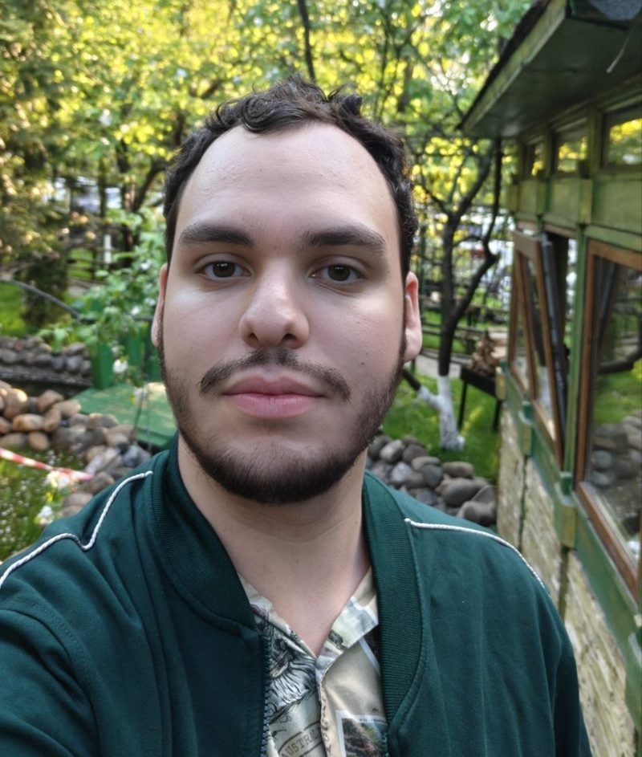

Web applications
Interfaces that stay fast as they grow — typed, tested, responsive.
React · Next.js · TypeScriptMy name is Daniil. I graduated from Hexlet IT College (2026) in web development. My hands-on experience comes from course projects and my own development work. I also hold a QA engineer diploma and use testing skills (E2E, API) while I build. Full cycle: APIs and database schemas, frontend, authentication, containerization and deployment. Open to junior fullstack / junior backend positions.

I work across the full development cycle — frontend and backend, from project setup to deployment.
I like hard problems, take long-term ownership of what I ship, and keep learning on my own every day.
Interfaces that stay fast as they grow — typed, tested, responsive.
React · Next.js · TypeScriptREST and real-time services, data models and integrations.
FastAPI · Django · Node.jsOne codebase, native shells: small binaries, offline-ready.
Tauri · Electron · ExpoContainers, CI/CD and bots that take the routine off people.
Docker · GitHub Actions · asyncioFive months in a team building “Knowledge Base”, an information and management system for the college.
Commercial work: I built cubichi.ru, a resource of learning materials.
A fast cross-platform file manager. Native shell in Tauri and Rust, interface in React and TypeScript — small binary, instant navigation.
Real-time checks that show whether a web service is blocked, regionally unavailable or simply down.
A browser media player with its own audio pipeline on the Web Audio API.
Live data monitoring: FastAPI streams over WebSocket, PostgreSQL stores, Docker ships it.
Experiments, tools and course projects across web, backend, desktop and testing.
What I bring to a team besides code.
I learn on my own every day: I read the docs and try new things in my own projects.
I finish what I start and take responsibility for what I’ve built.
My testing background helps me catch bugs before users do.
I ask questions openly, take code review calmly and help teammates.
One language per layer is never enough — I pick what fits the problem.
Web development · class of 2026 · secondary vocational education diploma, qualification: Programmer
Software testing · QA engineer diploma